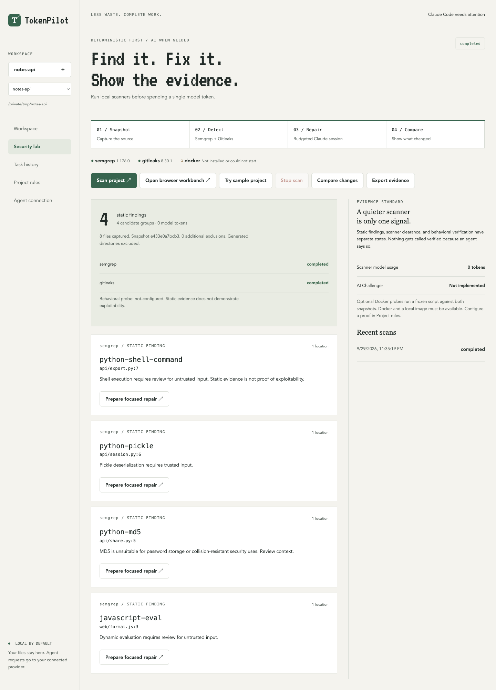

For macOS · Works with Claude Code · Free play
Spend tokens on fixing, not finding.
TokenPilot finds security issues with local scanners, hands Claude the exact code to fix instead of letting it explore, and keeps a patch only when the evidence says the fix holds.
git clone https://github.com/gregorygerman777-hub/TOKENPILOT && cd TOKENPILOT && npm ci && npm run web
- api/export.py:7shell-command
- api/session.py:6pickle
- api/share.py:5md5
- web/format.js:3eval
How to play
Three moves to start.
No account, no backend. Scans, history and reports stay on your Mac.
Install scanners
Semgrep and Gitleaks do the finding. Node 22 or newer runs TokenPilot.
brew install semgrep gitleaksGet TokenPilot
Clone the repository and install its dependencies.
git clone https://github.com/gregorygerman777-hub/TOKENPILOT && cd TOKENPILOT && npm ciScan
Open the workbench at 127.0.0.1:8792 and pick a folder.
npm run web
Repairs spend Claude credits from your own account: sign in once with claude auth login, then run node src/cli.cjs repair /path/to/project --output /tmp/pilot-repair.
Levels
Four levels free. One costs credits.
Plain code plays every level it can. Claude only plays the one that needs it, and starts with the map.
Snapshot
Copies the source with a hash for every file and the Git commit.
Detect
Semgrep and Gitleaks find candidate issues, secrets fully redacted.
Diagnose
Builds the repair brief: function, references, tests, checks, fix direction.
Repair
Claude Code fixes it from the brief, with hard limits on tool calls, repeats, time and spend.
Verify
Reruns checks and rescans. Plain code keeps the patch or reverts it.
The map
Claude starts at the right line.
Most of an agent's spend goes into wandering: listing files, searching, re-reading. The repair brief is the map, built for free.
- 1The exact function, with line numbers.
- 2Every other reference, so a fix does not break a caller.
- 3A fix direction for the rule that fired.
- 4The rules of the gate, so no credits go into cheats.
Finding: semgrep python-shell-command in api/export.py at line 7. Code, api/export.py lines 4-8, function export_notes:1 4: def export_notes(owner, fmt): 5: """Write the owner's notes to an archive in the requested format.""" 6: target = f"/tmp/exports/{owner}.{fmt}" 7: subprocess.run(f"tar -czf {target} notes/{owner}", shell=True, check=True) 8: return target Other references:2 api/views.py:1: from api.export import export_notes api/views.py:7: return export_notes(session["user"], request.args.get("format", "tar.gz")) Fix direction:3 Pass the command as an argument list and drop shell=True. Never build a shell string from input; allowlist the program if it must vary. The gate rejects suppression comments, renamed or aliased calls, and any new finding.4
The gate
No player scores their own run.
Every repair ends in one of three screens, decided by plain code. Repairs run on a private clone, so your repository is never touched.
Stage clear
Required checks pass, the finding is gone on rescan, nothing new appears and no test was edited. The fix goes into fixes.patch for you to review.
Game over
Any gate failed. The attempt is reverted, and the trust report says which gate stopped it.
Not played
Anything that did not run is shown that way: savings without a matched baseline, exploit reproduction, an independent AI reviewer. Never as a pass.
Select mode
Five modes. One engine.
- Desktop appSecurity Lab, focused repairs and budgets.
npm start - Browser workbenchLocal scans, history and reports.
npm run web - Claude Code pluginSeven tools, including the brief.
claude --plugin-dir . - Repair pipelineTrust report and verified-only patch.
node src/cli.cjs repair - CI gateBlocks new findings, keeps old ones visible.
node src/cli.cjs ci

High scores
Only scores that were played.
Every number links to its raw runs. Failed attempts and runs that lost usage data stay on the board.
| Rank | Score | Run |
|---|---|---|
| 1ST | 0 | Model tokens to find and diagnose. Every scan. Scanners and briefs are deterministic. |
| 2ND | 69.0% | Fewer tokens, coding controller vs. stock prompt. 8 matched pairs on 4 small synthetic tasks, same model and effort. 5 attempts without final usage stay in the record. Method and raw runs |
| 3RD | Pending | Repair brief vs. one-sentence handoff. The paired study is built: the same scanner findings repaired both ways, everything else equal. No score until it has run. |